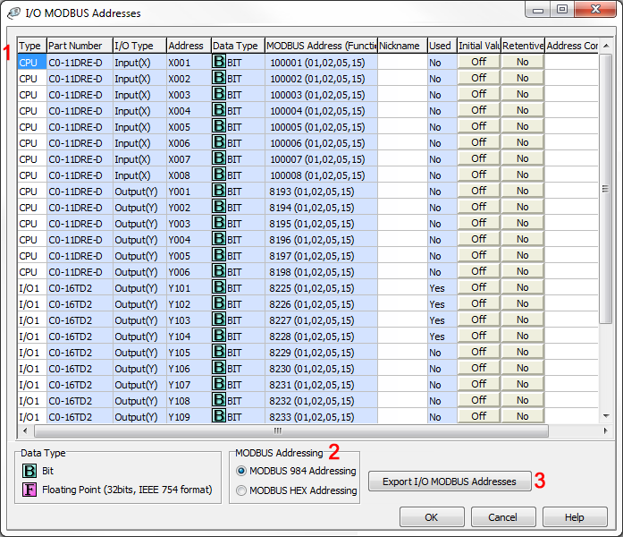

Topic: CL212

| I/O Modbus Addresses |
Topic: CL212
|
This window displays the MODBUS Addresses assigned to the all discrete and analog I/Os used in the CLICK PLC system.


1 List of I/O: All of the discrete and analog I/Os used in the CLICK PLC system are displayed in this list. You can edit the Nickname, Initial Value setup, Retentive setup and Address Comment for each I/O if necessary.
2 MODBUS Addressing: Select the MODBUS Addressing Type you use.
3 Export I/O MODBUS Addresses: By clicking this button, the ‘Save AS’ window opens. You can edit the CSV file name and change the folder location to store the CSV file if necessary.